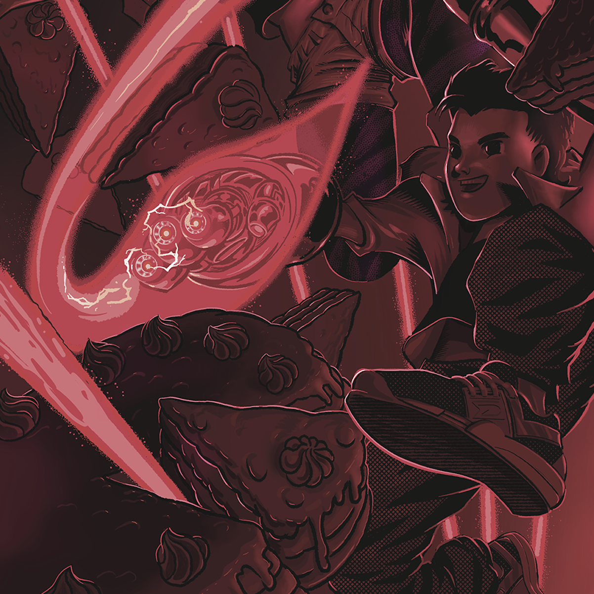

Wykresy od kuchni
Wprowadzenie
Jak tworzyć dobre wykresy? Dobre, czyli takie, które z przyjemnością się ogląda, z których można wyciągnąć wiele informacji, które są zrozumiałe dla szerokiego kręgu odbiorców, a jednocześnie docenią je smakosze.
Wymaga to pewnego treningu i znajomości kilku zasad, ale jest to umiejętność, której można się nauczyć. Nie jest to czcze gadanie, mam na to dowód! Od 2013 roku prowadzę zajęcia z wizualizacji danych na Uniwersytecie Warszawskim i Politechnice Warszawskiej. W tym czasie miałem przyjemność pracować z setkami studentów kierunków matematyczno-informatycznych, z których większość, gdy tylko poznała podstawowe reguły komunikacji przez wykresy, bardzo szybko była w stanie tworzyć wspaniałe, czytelne, często wyjątkowe wizualizacje.
Na bazie doświadczeń z prowadzenia tych zajęć powstały Wykresy od kuchni. To zbiór krótkich wykładów omawiających różne wątki przydatne w lepszym zrozumieniu tego, jak działa komunikacja z użyciem wykresów statystycznych. Na kolejnych stronach pojawi się wiele analogii do przyrządzania posiłków, ponieważ zarówno w kuchni, jak i w przygotowaniu wykresów statystycznych potrzebna jest praktyka, znajomość pewnych fundamentalnych prawideł, garść sprawdzonych przepisów i dużo zapału do eksperymentowania. Będąc tak uzbrojonym, każdy adept sztuki kulinarnej jest skazany na sukces.
W rozdziale Fabryka smaku omówiona jest rola spójności i standaryzacji przy tworzeniu wykresów statystycznych. Odniesiemy się do standardów stosowanych w innych dziedzinach, w których bardzo złożone projekty są komunikowane pomiędzy twórcą a szeroką grupą odbiorców. Jako przykład posłuży nam notacja muzyczna, diagramy UML czy szkice techniczne. Wykresy statystyczne to nie banery reklamowe, nie muszą krzyczeć, odróżniać się od sąsiednich wykresów. Wręcz przeciwnie. Dobre wykresy uzupełniają się nawzajem, są łatwe do odczytania, a moment ,,aha!’’ wynika z prezentowanych treści, a nie z formy. W drugiej części rozdziału pokażemy standardy proponowane przez Główny Urząd Statystyczny, gazetę ,,The Economist’’ czy organizację IBCS, rozwijającą międzynarodowe standardy komunikacji biznesowej.

W rozdziale Sprawdzone przepisy omówimy najpopularniejsze typy wykresów – rozwiązania, które warto znać i wykorzystywać, by przedstawiać najczęściej spotykane historie w danych. Jak pokazać rozkład zmiennych ilościowych lub jakościowych? Jak porównać dwie lub więcej grup obserwacji? Jak zaprezentować zależność pomiędzy dwiema lub większą liczbą zmiennych? Poznaj 14 wykresów, które zaspokoją każdy głód danych.

Znudziły Ci się klasyczne dania? Masz ochotę na eksperymenty? Fantastycznie! Zanim jednak wypłyniesz na nieznane wody, przeczytaj o trzech rafach, które trzeba umieć omijać. W rozdziale Dziury… opowiemy o problemach z percepcją kolorów na wykresach, problemach z odczytywaniem kształtów i problemach z kompozycją wykresu. Ale nie będziemy tylko narzekać, wielu z omawianych problemów można uniknąć, stosując się do prostych rad. Znajdziesz te rady na końcu każdego podrozdziału.
W przestrzeni informacyjnej spotykamy setki, jeżeli nie tysiące wykresów. Wśród lepszych i gorszych kompozycji zdarzają się też wyjątkowo smakowite egzemplarze. Takie, które gdy je zobaczymy, to zostają z nami na długo. Niektóre z nich są piękne, niektóre z nich uratowały wiele ludzkich istnień. W rozdziale Rodzynki pokazujemy pięć wykresów, które tworzą kanon wizualizacji danych. Przy okazji poznamy autorów tych wiekopomnych dzieł. Frank Anscombe, Otto Neurath, John Snow, Charles Minard czy Florence Nightingale – te nazwiska musi znać każda osoba interesująca się wykresami statystycznymi.

Opowieść o wykresach nie byłaby kompletna, gdyby nie zawierała ostrzeżenia o toksycznych wizualizacjach. Zatruta informacja może prowadzić do nieprzyjemności, niestrawności i zawrotów głowy. W rozdziale Uwaga: mutant! omawiamy kilka podstępnych trucizn, które mogą zepsuć smak całej potrawy. Błędy w ustalaniu osi wykresów, błędne użycie kolorów, błędne zastosowanie wykresów kołowych, błędnie poukładane elementy wykresu, błędnie oznaczane kluczowe informacje na wykresie to uchybienia, które mogą zniszczyć każde danie.
Znasz już teorię? Czas zabrać się za samodzielne pichcenie wykresów. W rozdziale Zakoduj to sam omówimy pakiet ggplot2 dla języka R, który jest jednym z najlepszych narzędzi do tworzenia wykresów statystycznych. Krok po kroku odtworzymy wykresy omówione w rozdziale Sprawdzone przepis, a przy okazji przeanalizujemy gramatykę grafiki – język stworzony po to, by wizualnie komunikować dane. Do tej książki dołączony jest też bardzo ciekawy zbiór danych opisujących ponad 2000 produktów spożywczych. Na bazie tego zbioru będziemy mogli razem przygotować kilka interesujących wizualizacji, przy okazji dowiadując się wielu ciekawych informacji o tych produktach spożywczych.
Każdy rozdział kończy się zbiorem zadań, pozwalających przećwiczyć omawiane zagadnienia. Niektóre są bardzo proste i będziesz mógł je zrobić bez większego wysiłku, ale są też takie, które będą wymagały trochę pracy. Nie zrażaj się, jeżeli niektóre z nich okażą się zbyt trudne, zawsze można wrócić do nich później.
Czytelniku, mam nadzieję, że kolejne rozdziały rozsmakują Cię w wizualnej eksploracji i prezentacji danych statystycznych.